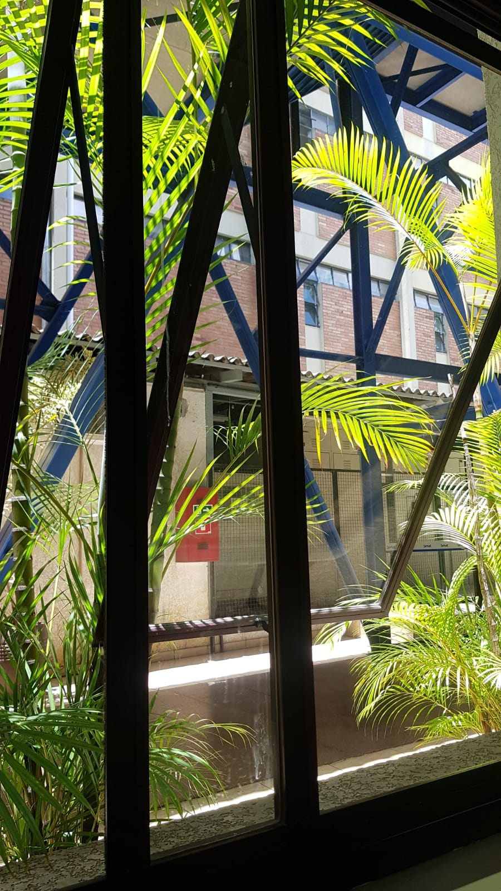
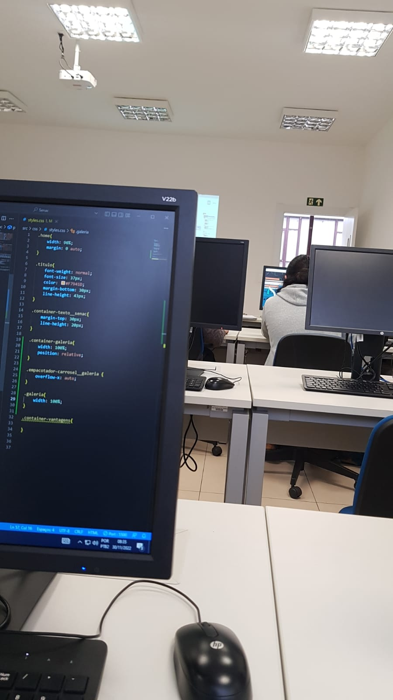

O Serviço Nacional de Aprendizagem Comercial


- 
- 

Senac é o principal agende de educação profissional voltado para o Comércio de Bens, Serviços e Turismo
do País.
Com o objetivo de dar apoio ao comércio paranaense para a retomada econômica de 2021,
o Senac PR
está
investindo mais de 18 milhões gratuitas, por meio do Programa de Bolsas Senac PR.
Sendo que 1.045 vagas são destinadas para cursos técnicos a distância.
Vantagens de ser cliente
- Gestão transparente
- Comprometimento
- Qualidade
- Inclusão Social
- Oferta cursos gratuitos
O que dizem os clientes?
-
José AntônioEste lugar oferece cursos com uma ótima estrutura e ótimos professores.
-
Italo dÉ um ótimo lugar para estudar e se preparar para uma carreira profissional.
-
Ericka EÉ um ótimo lugar, laboratórios bem estruturados, salas amplas e limpas.